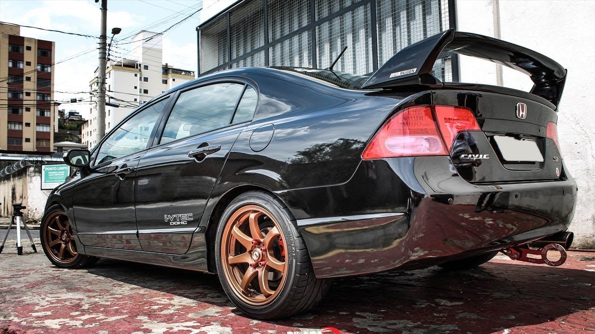

História JDM
História JDM
Simplicidade, fiabilidade e performance. Foi na base destes três princípios que nasceu o JDM. Um acrónimo que serviu para denominar os automóveis oriundos do mercado japonês (Japonese Domestic Market), e que hoje significa muito mais do que isso. Ao contrário do que as pessoas pensam, esse termo não surgiu nas ruas e sim nas pistas, tendo em vista as performances dos veículos em diversar modalidades de corrida. Aqui, mostraremos somente os veículos que eu, particularmente amo, que são as reliquias dos JDM que são amados e muito buscados até os dias atuais, podendo custar até mesmo mais de R$1.000.000,00Antes, é importante ressaltar o "acordo de cavalheiro" feito pelas marcas de veículos, onde o acordo era montar os melhores veículos possíveis, porém com, em média, 280cv de potência. Mas o que a história mostra, é que esses veículos não são tão "fracos de potência" mesmo stock (original de fábrica), além disso, a facilidade de realizar modificações simples e aumentar muito a potência do veículo. Dito isso, confira alguns desses veículos excepcioniais:
Esse veículo (que eu gosto de chamar de King Kong), é um veículo de fácil modificação, de tração traseira e de um alto nível de desempenho. Com esta geração vem mais tecnologia e mais novidades para os afoitos apaixonados pelo carro. Desta vez duas opções de motorização, sendo uma de 6 cilindros (2JZ-GE), 3.0 litros e 24 válvulas com duplo comando no cabeçote e com controle variável de abertura das válvulas, responsável por 220 cavalos de potência, e outra (2JZ-GTE) com as mesmas características, porém com dois turbos sequenciados que rendiam até 325 cavalos de potência. Equipado com câmbio manual de 6 velocidades Getrag, o Supra biturbo exportado para os países que não fazem exigência do limitador eletrônico de velocidade, alcança 250 km/h (com o limitador eletrônico chega a 180 km/h) e acelera de 0-100 km/h em 5,3 segundos. Porém nos diversos países europeus e mesmo nos EUA - um grande mercado para o Supra - as regulamentações de emissão de poluentes, impuseram restrições a carros como ele e alguns de seus concorrentes, fazendo com que em 1999 suas vendas fossem encerradas. A produção continuou no Japão até agosto de 2002, cessando devido a padrões de emissão restritivos.
Ainda sobre o Supra, houve um "artista", chamo assim, pois o que ele fez com o Toyota Supra, pode ser considerado uma obra de arte. Elevando ainda mais o gosto pelo carro. Ele removeu o motor 2jZ e inseriu um motor V-12, que funcionava como 2 V-6 independentes.
O nome dele é Smokey Nagata, ex-membro do grupo conhecido mundialmente, mas que iniciou no Japão: Midnight Club (é algo parecido com uma gangue, mas ao invés de crimes como assaltos, assassinatos o crime que cometiam era simplesmente apostar corridas em ruas). O intuito do grupo, era, além de competir com outros grupos, era a união de amantes por carros e suas modificações, afim de extrair o máximo de potência de seus veículos, porém sem demontrar riscos a população. O motivo do grupo se desfazer, foi devido a uma corrida onde a gangue rival (essa sim era uma gangue, devido a outros crimes); em uma das corridas, houve um acidente onde acabaram matando um civil. O grupo, quando criaram, como principal regra era manter as pessoas seguras enquanto elas se divertem. Se acontecesse algo como o que ocorreu, o grupo iria se desfazer, foi o que acontecer e cada um seguiu seu rumo.Um outro fator que fez com que caísse ainda mais no gosto das pessoas os veículos JDM, foi devido a franquia de "Velozes e Furiosos", onde o "Bryan O'Conner", interpretado pelo ator Paul Walker (falecido em 2013 em um acidente de carro, um Carrera Gt, seu carro dos sonhos). Na franquia, ele costumava dirigir diversos veículos japoneses, como: Mitsubishi Eclipse, Toyota Supra, Nissan Skyline, entre outros.
O Supra dirigido por "Bryan", foi um conversível, com cores bem vivas e chamativas.Esse veículo (que gosto de chamar de Godzilla), como era a proposta dos JDM's, também possui fácil modificação com um alto nível de desempenho, porém possui tração integral. O Skyline GT-R R34 é uma versão esportiva de grande prestígio do Nissan Skyline. A versão GT-R possui o motor Nissan RB26DETT, de 6 cilindros em linha com biturbo, gerando 280cv(stock). A sigla GT-R surgiu depois de uma vitória da Nissan em 1964 com o S54 2000 GT-B. Em 1973 o modelo GT-R deixou de ser produzido. 16 anos depois a Nissan traz a sigla GT-R de volta com o modelo Nissan Skyline GT-R R32 com o motor RB26DETT e tração 4WD e um motor de 280 HP. A geração R32, também chamada de Godzila, foi até 1994, ano em que foi substituída pelo R33 que muitos reclamaram devido ao peso e tamanho. Em 1998 o R33 foi substituído pelo R34, o mais perfeito GT-R devido a potencia do R33 e tamanho reduzido próximo ao R32. Sua produção foi interrompida em 2002.
Dentre as suas diversas versões, a que, na minha humilde opinião, a melhor e mais incrível versão, é a: V-Spec II Nür Nismo R-Tune.

V-Spec II Nür Nismo R-Tune
foram fabricadas 12.175 unidades do Skyline GT-R R34 até 2002,
das quais 5.512 são do Skyline GT-R R34 V-Spec II, que foi lançado em outubro de 2000 e tem como
diferenciais suspensão mais firme, discos de freio maiores na traseira e capô de fibra de carbono com um
duto NACA. Destas, 718 fazem parte da série especial Skyline GT-R R34 V-Spec II Nür, que um motor mais
potente, chamado RB26DETTN1. O motor tinha bloco reforçado, dutos de resfriamento maiores, bombas de óleo e
água mais potentes, pistões retrabalhados e bielas feitas de material mais resistente, além de turbos
maiores e um sistema de escape retrabalhado para render cerca de 330 cv. As versões mais comuns do GT-R R34
tinham 280 cv.
A Nissan oferecia outras duas opções a quem comprasse um V-Spec II Nür: os pacotes S-Tune e R-Tune. O
primeiro trazia molas e amortecedores mais macios e o motor S1, que era preparado com foco para uso nas
ruas, com mais torque em baixas rotações. O segundo era voltado para uso em pista, e recebia o motor R1 –
que era tão potente quanto o motor do Z-Tune.
O RB26 R1 tinha os dutos polidos, novos turbos, intercooler com maior capacidade, radiador de óleo e novos
comandos de válvulas e componentes internos forjados para entregar até 450 cv. Só não utilizava o bloco do
Z-Tune, que derivava dos modelos de competição, e por isso tinha o deslocamento de 2,6 litros em vez de 2,8
litros.
Assim como o "Bryan O'Conner" (Paul Walker) possuía um Supra na franquia de "Velozes e Furiosos" em sua vida pessoal e no filme ele possuiu um R-34. O Modelo acima foi utilizado no filme: Velozes e Furiosos 2. Esta versão, mais precisamente Nissan Skyline GT-R V-Spec II R34, 2001 considerada o mais perfeito da linha fez sucesso nas mãos de Brian O’Connor (Paul Walker). Inicialmente não era este o carro que Paul pilotava, mas a inspiração veio depois que Craig Lieberman, dono de vários carros presentes na franquia, adquiriu o modelo, importado e legalizado, custando 78 mil dólares no mês de Julho de 2001. Para a produção do filme, eles precisaram de cerca de 5 exemplares comprados por cerca de $ 50 mil, sendo um deles, vindo diretamente do Reino Unido. Como era o carro principal do personagem após a desaprovação do design pelo próprio dono do carro, pois as duas listras azuis na pintura cinza remetiam aos carros estilo “muscle”, ele foi repaginado. Por isso, ganhou uma cor uniforme azul com alguns detalhes em dourado. Trabalho este realizado pela GReddy. Além de seu azul peculiar Bayside Blue, a estrela Nissan Skyline possui outras peculiaridades como um câmbio manual de seis marchas, amortecedores com ajustes eletrônicos, cinto de segurança de cinco pontos, bancos de competição, freios Brembo, entre as demais. Justamente por ter passado pelas mãos de Paul Walker, agora este modelo que estrelou nos filmes está avaliado em mais de $ 500 mil e faz parte de uma coleção particular cujo dono não deseja se identificar.
O fato de ele possuir o veículo, não somente nos filmes, como em sua vida pessoal (imagem acima) fez com que o veículo fosse cada vez mais amado pelo público, fazendo com os preços, consequentemente, subissem. O ator Paul Walker colecionou durante sua carreira vários carros, e um de seus mais valiosos era o Skyline GT-4 V-Spec da geração R34 - raridade na América do Norte
Veículo também conhecido com NISSAN 200SX, é um JDM muito querido no cenário que produz cerca de 250cv (stock).Com consumo médio de 8.8 litros/100km, 0 aos 100 km/h em 7.5 segundos, velocidade máxima de 235 km/h, um peso de 1240 kgs, o 200 SX S15 2.0 Turbo está equipado com um motor Em linha de 4 cilindros turbocompressor, a Gasolina, com o código de motor SR20DET. Este motor produz uma potência máxima de 200 CV às 6400 rotações e um torque máximo de 265 Nm às 4800 rotações. A potência é transmitida à estrada através de um câmbio Manual de 5 marchas, e o tipo de tração é traseira (RWD). Quanto às caracteristicas do chassis, responsáveis pelo comportamento em curva e conforto, o 200 SX S15 tem suspensão dianteira do tipo Independent. McPherson. coil springs. anti-roll bar e suspensão traseira do tipo Multilink. Coil springs. anti-roll bar. As medidas de pneus são 205 / 55 em jantes de 16 polegadas à frente e 205 / 55 em jantes de 16 polegadas atrás. Na travagem, o sistema de travões do 200 SX S15 2.0 Turbo tem Discos Ventilados à frente e Discos na traseira. O modelo 200 SX S15 é um carro do tipo produzido pelo fabricante Nissan, vendido a partir do ano 1999 até 2002.
Trata-se de um veículo muito utilizado, principalmente para corridas de drift. Os carros utilizados em drift são consideravelmente leves. No Japão os carros mais usados são o Nissan Silvia, Nissan 350z ou (zeto), Toyota AE86, Mazda RX-7, Nissan Cefiro (versão com tração traseira), Nissan Laurel, Nissan Skyline (com tração traseira), Nissan Fairlady Z, Toyota Altezza, Toyota Soarer, Honda S2000, Mazda Miata, Toyota Supra, Subaru Impreza e Mitsubishi Lancer Evolution.

O veículo acima, foi utilizado na franquia de "Velozes e Furiosos 3", chamado de "monalisa" é utilizado por "Sean", interpretado pelo ator Lucas Black. Que infelizmente durante a corrida no film, acidentalmente bate o veículo.
Veículo que possui a marca registrada da Mazda, que revolucionou o mercado de motorização de veículos. Com consumo médio de 11.1 litros/100km, 0 aos 100 km/h em 5.3 segundos, velocidade máxima de 250 km/h, um peso de 1310 kgs, o RX 7 FD Twin Turbo está equipado com um motor Wankel de 2 cilindros turbocompressor (motor rotativo, marca registrada da Mazda), a Gasolina.Este motor produz uma potência máxima de 255 CV às 6500 rotações e um torque máximo de 294 Nm às 5000 rotações. A potência é transmitida à estrada através de um câmbio Manual de 5 marchas, e o tipo de tração é traseira (RWD). Quanto às caracteristicas do chassis, responsáveis pelo comportamento em curva e conforto, o RX 7 FD tem suspensão dianteira do tipo Independent. Double Wishbones. coil springs. anti-roll bar e suspensão traseira do tipo Independent. Double Wishbones. anti-roll bar. As medidas de pneus são 225 / 50 em jantes de 16 polegadas à frente e 225 / 50 em jantes de 16 polegadas atrás. Na travagem, o sistema de travões do RX 7 FD Twin Turbo tem Discos Ventilados à frente e Discos Ventilados na traseira. O modelo RX 7 FD é um carro do tipo Coupé produzido pelo fabricante Mazda, vendido a partir do ano 1992 até 1996.
Novamente citando a franquia de "Velozes e Furiosos", o personagem "Han", interpretado pelo ator Sung Kang, quem dirigiu esse veículo incrivel. O veículo em questão seria uma versão mais nova do veículo, onde não possuía mais os faróis escondidos, porém continua sendo um RX-7.
Veículo muito utilizado para corridas de drift, pelos mesmos fatores do Silvia. Devido ao peso, potência e desempenho.
Por mais que sua cavalaria (stock), seja baixa, é um veículo de fácil modificação, tornando-o um monstro nas pistas. Com consumo médio de 7.2 litros/100km, 0 aos 100 km/h em 10.2 segundos, velocidade máxima de 177 km/h, um peso de 950 kgs, o Civic V 3d 1.5 LSi está equipado com um motor Em linha de 4 cilindros atmosférico, a Gasolina, com o código de motor D15B2. Este motor produz uma potência máxima de 90 CV (stock) às 6000 rotações e um torque máximo de 119 Nm às 4700 rotações. A potência é transmitida à estrada através de um câmbio Manual de 5 marchas, e o tipo de tração é dianteira (FWD). Quanto às caracteristicas do chassis, responsáveis pelo comportamento em curva e conforto, o Civic V 3d tem suspensão dianteira do tipo Independent. Double Wishbones. coil springs. anti-roll bar e suspensão traseira do tipo Independent. Double Wishbones. anti-roll bar. As medidas de pneus são 175 / 70 em jantes de 13 polegadas à frente e 175 / 70 em jantes de 13 polegadas atrás. Na travagem, o sistema de travões do Civic V 3d 1.5 LSi tem Discos à frente e Tambores na traseira. O modelo Civic V 3d é um carro do tipo produzido pelo fabricante Honda, vendido a partir do ano 1991 até 1995.
Claro que esse veículo também foi utilizado no filme da franquia "Velozes e Furiosos", veículo foi dirigido pelo personagem "Hector", interpretado pelo ator Noel Gugliemi. A versão utilizada no filme é de ano 1992
Avançando no tempo, mas ainda no Civic, temos o Honda Civic Si do ano de 2008, veículo que independente da versão, costumo chamar de "Tubaras"(abreviação de tubarão, pois o carro é um monstro). O Honda Civic Si é um carro esportivo compacto, a versão esportiva do Honda Civic. A designação "Si", que corresponde a "Sport Injection", foi originalmente usada no Japão e América do Norte, significava o mais potente do mercado civil. Para o mercado japonês e europeu, foi adaptado como um carro de alto desempenho. No Canadá, o modelo é conhecido por ter muitas semelhanças com o modelo antigo.

Foi escolhido pela revista Quatro Rodas o melhor esportivo de fabricação no Brasil. Também já foi considerado o carro nacional mais rápido, perdendo o posto para o Volkswagen Jetta TSI, quando saiu de linha em 2011. O Civic Si 2007, 08, 09, 10, 11 faz de 0-100 em 7,5 segundos e chega aos 215 km/h. Velocidade esta que é limitada eletronicamente. Já o Civic Si 2014, que tem um motor de 2.4 litros, 201 cv de potência (stock) e 23,4 kgfm de torque, faz de 0-100 em 6 segundos e chega aos mesmos 215 km/h, que também é limitado. Usa pneus com medidas 215 45 R17.
Com consumo médio de 10 litros/100km, 0 aos 100 km/h em 5.9 segundos, velocidade máxima de 270 km/h, um peso de 1370 kgs, o NSX 3.0 V6 está equipado com um motor V de 6 cilindros atmosférico, a Gasolina. Este motor produz uma potência máxima de 273 CV (stock) às 7300 rotações e um torque máximo de 284 Nm às 5400 rotações. A potência é transmitida à estrada através de um câmbio Manual de 5 marchas, e o tipo de tração é traseira (RWD). Quanto às caracteristicas do chassis, responsáveis pelo comportamento em curva e conforto, o NSX tem suspensão dianteira do tipo Independent. Double Wishbones. coil springs. anti-roll bar e suspensão traseira do tipo Independent. Double Wishbones. anti-roll bar. As medidas de pneus são 245 / 40 em jantes de 17 polegadas à frente e 245 / 40 em jantes de 17 polegadas atrás. Na travagem, o sistema de travões do NSX 3.0 V6 tem Discos Ventilados à frente e Discos Ventilados na traseira. O modelo NSX é um carro do tipo produzido pelo fabricante Honda, vendido a partir do ano 1991 até 1997.
Em resposta aos seus concorrentes após a criação da linha premium da Toyota, a Lexus e a linha premium da
Nissan, a Infiniti. A Honda, criou a linha premium com nome Acura, onde foi lançado o Acura Nsx,
basicamente, o mesmo veículo, porém com alguma pequenas difierenças, são elas:
Distintivo;
Ligeiro
remapeamento da ECU (Central Eletrônica);
Volante originalmente na direita.
Esse veículo foi testado por ninguém mais, ninguém menos que a lenda do cenário automobilístico, Aírton Sena. Ele auxiliou a Honda, por meio de testes, a deixar o carro cada vez melhor tanto em potência, quanto em conforto e dirigibilidade.
O veículo apresntado acima, trata-se de um Evo VII, com 0 aos 100 km/h em 4.8 segundos, velocidade máxima de 253 km/h, um peso de 1380 kgs, o Lancer VIII Evolution VII está equipado com um motor Em linha de 4 cilindros turbocompressor, a Gasolina. Este motor produz uma potência máxima de 280 CV (stock) às 6500 rotações e um torque máximo de 383 Nm às 3500 rotações. A potência é transmitida à estrada através de um câmbio Manual de 5 marchas, e o tipo de tração é total / integral (AWD). Quanto às caracteristicas do chassis, responsáveis pelo comportamento em curva e conforto, o Lancer VIII tem suspensão dianteira do tipo Independent. McPherson. coil springs. anti-roll bar e suspensão traseira do tipo Multilink. Coil springs. anti-roll bar. As medidas de pneus são 235 / 45 em jantes de 17 polegadas à frente e 235 / 45 em jantes de 17 polegadas atrás. Na travagem, o sistema de travões do Lancer VIII Evolution VII tem Discos Ventilados à frente e Discos Ventilados na traseira. O modelo Lancer VIII é um carro do tipo produzido pelo fabricante Mitsubishi, vendido a partir do ano 2002 até 2004.
Como de costume, esse veículo também foi utilizado na franquia "Velozes e Furiosos", pilotado pelo personagem "Bryan O'Conner", foi interpretado pelo ator Paul Walker.

Avançando no tempo, de todos os Lancer Evo, essa versão é a minha favorita, o Lancer Evolution X. Das dez versões fabricadas, todas utilizam um motor de 2 litros, com turbo e tração nas quatro rodas. Cada versão é numerada com números romanos, mas não necessariamente sendo uma nova geração. Os modelos japoneses têm restrição de potência, para obedecer as leis locais. Já as versões disponíveis em alguns outros mercados, como por exemplo o Reino Unido, têm a potência original (sem a limitação de potência), atingindo até 450 cv. Foi 4 vezes campeão do WRC (World Raly Championship) em 1996, 1997, 1998 e 1999, e 10 vezes campeão do P-WRC (Production Car World Rally Championship), em 1995, 1996, 1997, 1998, 1999, 2000, 2001, 2008, 2009 e 2010. O Lancer Evolution foi originalmente destinado apenas para o mercado japonês, mas com a demanda do mercado cinza, começou a ser vendido no Reino Unido e em vários mercados europeus a partir de 1998. A Mitsubishi decidiu exportar a 8ª versão do Lancer Evolution para os Estados Unidos em 2003, depois de notar que o Subaru Impreza WRX STI, seu rival, teve sucesso nesse mercado. A décima e última versão do Lancer Evolution foi lançada no Japão em 2007, e em mercados do exterior em 2008, até deixar de ser fabricado em 2015 por decisão da Mitsubishi.
O Evolution X pode acelerar de 0-100 km/h em 4,5 segundos. Foi lançado com 280 cv a 6 500 rpm e 43 kgf.m a 3500 rpm. Porém, o acordo dos 280 cavalos no Japão foi revogado, o que permitiu com que a potência subisse para 300 cavalos no começo de 2009. O modelo RS conta com transmissão manual de cinco velocidades. O modelo GSR tem transmissão de cinco e de seis velocidades, essa última semiautomática de dupla embreagem, além de tela LCD e entrada remota como opcional. Uma última versão, Final Edition, será produzida de maneira limitada (1 000 unidades), equipada somente com transmissão manual de 5 velocidades, com bancos Recaro, rodas BBS de 18 polegadas, suspensão Bilstein e Eibach, freios Brembro, além dos logos "Final Edition".
Com consumo médio de 11.1 litros/100km, 0 aos 100 km/h em 5.5 segundos, velocidade máxima de 244 km/h, um peso de 1425 kgs, o Impreza (GD) 2.0 WRX STi AWD está equipado com um motor Boxer de 4 cilindros turbocompressor, a Gasolina. Este motor produz uma potência máxima de 265 CV (stock) às 6000 rotações e um torque máximo de 343 Nm às 4000 rotações. A potência é transmitida à estrada através de um câmbio Manual de 6 marchas, e o tipo de tração é total / integral (AWD). Quanto às caracteristicas do chassis, responsáveis pelo comportamento em curva e conforto, o Impreza (GD) tem suspensão dianteira do tipo Independent. McPherson. coil springs. anti-roll bar e suspensão traseira do tipo Independent. Double Wishbones. anti-roll bar. As medidas de pneus são 225 / 45 em jantes de 17 polegadas à frente e 225 / 45 em jantes de 17 polegadas atrás. Na travagem, o sistema de travões do Impreza (GD) 2.0 WRX STi AWD tem Discos Ventilados à frente e Discos Ventilados na traseira. O modelo Impreza (GD) é um carro do tipo produzido pelo fabricante Subaru, vendido a partir do ano 2003 até 2005.
O Subaru Impreza estreiou no Campeonato Mundial de Rali com o Subaru Impreza WRC em 1993, foi campeão de pilotos com Colin McRae em 1995, com Richard Burns em 2001 e com Petter Solberg em 2003, e tricampeão de construtores entre os anos de 1995 e 1997, detém junto com o Lancia Delta o maior número de vitórias em eventos, disputou a competição até o ano de 2011. No Japão, o modelo também foi usado no JTCC de 1998, e na Super GT classe GT300 entre os anos de 2005 e 2008
Esse veículo da imagem acima, o Subaru Impreza WRX, no filme "Em Ritmo de Fuga", dirigido pelo personagem "Baby", interpretado pelo ator "Ansel Elgort". O modelo protagonizou cenas de perseguição após um assalto a banco logo no início da obra.
Eu sou suspeito a dizer, tenho meus favoritos entre esse modelos. Dentre os citados na matéria, qual
escolheria?
E nesse duelo de monstros, com qual iria?